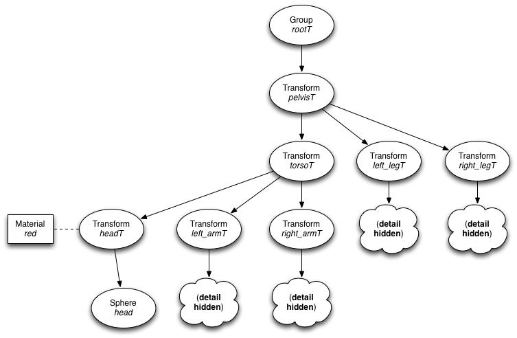

C++ overview and OpenSceneGraph introduction
This learning module will provide an overview of C++, targeted toward those with some background in Java or C.
Overview of C++
C++ data types
See this page for a
description of all C++ primitive data types, including concepts like minimum and maximum numbers, not-a-number,
and infinity. The most commonly used types are
void, bool, char, int, unsigned, long, float, and double.
Since C++ is "close to the metal", like C, it can help you to know the
number of bits used for each representation, which can change depending on
machine architecture.
Some differences between C++ and Java
Notes below will be useful even to those programmers without a background in Java.
- C++ uses
boolfor a Boolean type (Java calls thisboolean) - Java uses
System.out.printlnfor output tostdout. C++ usesstd::cout, the<<operator, andstd::endl. The Java statementSystem.out.println("Hello world!");would bestd::cout << "Hello world!" << std::endl;in C++. - Java forces you to allocate non-primitive types on the heap, where C++ allows you to allocate non-primitive types on the stack (the latter is faster and more amenable to real-time performance).
- Java automatically de-allocates memory (using relatively slow garbage collection).
- Array allocation is slightly different. Arrays are allocated in Java like
int[] array = new int[20]. Arrays are allocated in C++ likeint* array = new int[20]. - In Java, a member function is defined like
public void tabulateScores()while the function would be declared in C++ likepublic: void tabulateScores() - All primitive types (
int,float, etc.) are passed by value to functions and all non-primitive types are passed by reference. C++ gives the option to pass any type by reference or by value to a function. - C++ requires you to declare function prototypes and classes when you refer to them (before they have been defined- fleshed out). If you refer to a class before it has been defined, C++ requires you to do a forward declaration. Java was smart to avoid declarations, in my opinion.
- C++ does not have interfaces but it does have pure virtual functions, which serve an identical purpose.
Some resources for Java programmers to learn C++:
Object-oriented programming in C++
Object oriented programming (OOP) is a programming model centered around data and the functions used to operate on that data rather than procedural programming languages (like C) that focus on decomposing a task into subroutines (procedures). A tutorial to OOP in C++ can be found here.
Memory allocation and shared pointers
One price you pay for the additional speed and control that C++ offers is
the need to manage heap memory allocation and deallocation. Memory is allocated
from the heap using the new operator:
int* x; // x is a pointer
x = new int; // allocated memory for x on the heap
and memory must be deallocated from the heap using the delete operator:
delete [] x;
For every new in your code, there should be a matching delete.
Shared pointers
Shared pointers provide automatic memory deallocation. I suggest using them instead of regular pointers for memory allocation/deallocation. The idea is simple- when no more references point to a block of memory, the block is deallocated- though a few caveats exist. Shared pointers work like this:
shared_ptr<int> x; // x is a shared pointer to an int
x = shared_ptr<int>(new int); // allocated memory
There no longer needs to be a matching delete statement. The advantages
of shared pointers over garbage collection are that the former is considerably
faster and that memory is reclaimed as soon as possible. The disadvantage is
that circular pointer references must be explicitly managed by the programmer
or memory leaks will occur.
Using the following example class definitions will result in a memory leak:
class B; // the forward reference is necessary
class A
{
shared_ptr<B> b;
};
class B
{
shared_ptr<A> a;
};
This situation is fixable using a weak pointer:
class B; // the forward reference is necessary
class A
{
shared_ptr<B> b;
};
class B
{
weak_ptr<A> a; // the weak pointer breaks the circular reference
};
Passing by reference and passing by value
(ED: I have seen this advice somewhere but cannot locate it at the present moment. I will cite my source when I find it again.)
- Pass variables by reference when the function is to modify the variable.
As a matter of fact, indicating that the variable is passed by reference
and without the
constkeyword indicates to the caller that the function is expected to modify the variable. - Else, for primitive types, pass by value
- Pass objects by reference and use the
constmodifier when the object uses more memory than a pointer (64-bits on most systems) and the function is not expected to change the object (e.g.,void sum_inertias(const SpatialRBInertiad& J)). - Pass objects by value when the object uses less memory than a pointer and the function is not expected to modify the object
Compiling/linking C++ on Unix-type systems
Whether producing an executable file or a software library, C++ requires two processes: compiling the C++ source code into machine code ("object files") and linking the object files together (which resolves symbolic references to functions and data). A description of the compilation and linking processes is here.
As a very simple example,
g++ -c hello.cpp -o hello.o
compiles hello.cpp to produce hello.o and
g++ hello.o -o hello
links hello.o with the C++ standard libraries to produce the executable hello.
I recommend getting and learning CMake to build your projects, which can take care of the compiling and linking process for you automatically. Otherwise, you have to compile your source files manually, forcing you to remember all of the arcane command line options, and then manually link your objects together. One warning: the linker (g++) is sensitive to the order that libraries and object files are specified on the command line on Linux systems.
Newer language features
C++ continues to support more and more features over time. The language's evolution reminds me of this:

because few language features are ever removed. The C++ standard template library contains a number of useful data structures- including vectors, linked lists, queues, stacks, sets, and maps- and algorithms (finding maximum elements, binary search, sorting, and more). You will be able to increase your programming proficiency in C++ many fold when you understand the concept of iterators.
A staging ground for many C++ algorithms that often make their way into the language is Boost. This functionality goes part of the way toward replicating the utility of other languages' standard libraries (Python and Java in particular).
Templates
Templates allow us to avoid code like this:
void swap(int& x, int& y)
{
int tmp = x;
x = y;
y = tmp;
}
void swap(float& x, float& y)
{
float tmp = x;
x = y;
y = tmp;
}
.
.
.
We can do this instead:
template <typename T>
void swap(T& x, T& y)
{
T tmp = x;
x = y;
y = tmp;
}
This saves typing and, more importantly, reduces possibility of bugs from copy and paste (a great way to introduce bugs in programming). On the downside, templates make code a little harder to read, make it slower to compile, and tends to generate really hard to read compiler error messages for syntax errors (see this part of the C++ FAQ for a fix). Learning templates well will help you understand the Boost, the STL, and will give you the ability to read the majority of C++ code.
Exceptions
Before exceptions, programmers would check for errors like this:
FILE* fp = fopen("/tmp/dat", "w");
if (!fp)
{
std::cerr << "Unable to open file!" << std::endl;
return false;
}
...
Using exceptions we check for errors like this:
try
{
fp = open("/tmp/dat");
}
catch (IOException e)
{
std::cerr << "Unable to open file!" << std::endl;
return false;
}
One advantage is that if we don't care about the error at this level- it's
apparent that we already signal to the calling function that there was a
problem by
the return false statement- then we can keep our code very neat by doing
this instead:
fp = open("/tmp/dat");
Now if we do not "catch" the exception, the function above is responsible
for catching it, on up the call stack, until- if the main function does not catch it- the exception will cause
the program to terminate with an error.
A commentor on Stack overflow indicates two benefits:
- They can't be ignored: you must deal with them at some level or they will terminate your program. If you do not explicitly check for the error code, it is lost.
- They can be ignored: if you explicitly wish to ignore an exception, it will propagate up to higher levels until some piece of code does handle it.
This same Stack overflow thread has many more viewpoints on why exceptions are useful. No commentor argues that checking for error codes is a better solution.
Programming / debugging advice
Some general programming advice (beyond C++):
- readability: One of your primary goals when programming is to carefully guide another programmer through your code. Even if you expect to be the only person to ever see your code, you will be that other programmer in six months.
- minimize cognitive load: Toward keeping your code readable, minimize the
cognitive load. Name variables and functions descriptively (
num_iterationsinstead ofn,calc_inertias(.)instead ofcompute(.)). - use STL containers instead of arrays: Arrays do no range checking and
the correct size must be allocated at runtime; accidentally overwriting memory
outside of the array is a common bug and is a common vector for security attacks. I prefer the STL vector, which can be accessed like an array (e.g.,
x[5] = 3), can be queried for its size, automatically deallocates memory when the variable goes out of scope, performs range checking, and can increase its capacity automatically. Here is a nice tutorial on the STL (Standard Template Library). - put reusable code in functions and keep functions small: longer functions are more likely to have defects (see a dissenting viewpoint plus several that backup my point of view here). The longer your function is, than say 50 lines of code, the more you should consider breaking it into multiple functions.
- beware of macros
- write the comments first: This is a strategy I use when programming. Writing the comments first helps you focus on organizing the logic. Filling in the code from the comments is pretty easy when you know the language syntax.
- address the first compiler errors first: Many errors found by the C++ compiler will disappear after you correct the first in a list of errors.
- fix all compiler warnings: C++ compilers tend to generate warnings in places where compilers for other languages would generate errors. Take compiler warnings seriously- treat them as errors.
- write unit tests: Unit tests allow you to catch problems in a function while you remember the ins and outs of that function as opposed to six months down the road when you locate a bug in the function.
- use a debugger: see below
C++ tools
- git / version control: While not a C++ tool per se, use version control to track your changes. Advanced features of version control even allow you to, as examples: run unit tests, run regression tests, and build binary releases upon committing code.
- gdb / lldb: Debugging using
printf(or its variants among programming languages) is usually an order of magnitude faster than using a debugger. Learn at least the main features of a debugger. A good tutorial on gdb is found here. - valgrind: If you have a bug that you are having difficulty locating using gdb, valgrind should be your next stop. Valgrind can locate problems like illegal memory reads and writes that gdb will not catch.
- performance tools: Do not prematurely optimize: you will find that your intuition about the time sinks in your software are often wrong anyway. Use a profiler, my favorite on Linux is currently google-perftools.
Additional reference materials
- C++ FAQ
Overview of OpenSceneGraph
You have two clear options to program in 3D: OpenGL, which is a state system (the rendering is completed determined by state variables), and scene graph-based systems, like OpenSceneGraph, Open Inventor, and Java 3D. The earliest technology for viewing 3D content on the web, VRML, is based on a scene graph representation (and this is a pretty good file format too).
I will discuss the scene graph representation because it is intuitive to understand- it fits well into the object-oriented paradigm, in particular- and 3D rendering can be achieved with very little code. For example, this tiny bit of code renders many 3D models that you can view using mouse controls:
// simple.cpp (Evan Drumwright)
#include <osgDB/ReadFile>
#include <osgViewer/Viewer>
int main(int argc, char** argv)
{
if (argc < 2)
{
std::cerr << "syntax: simple <filename>" << std::endl;
return -1;
}
osgViewer::Viewer viewer;
viewer.setSceneData(osgDB::readNodeFile(argv[1]));
return viewer.run();
}
You can build this program using this CMake build file. You can then run the program on many 3D files. One example is this cessna airplane. Once you build the program, you run it like this: simple cessna.osg.
The scene graph
A scene graph is a collection of nodes in a tree (or, more generally, a graph) structure. A node in the tree may have many children but only a single parent, with the effect of a parent applied to all its child nodes. An operation performed on a group automatically propagates its effect to all of its members.
Associating a geometrical transformation matrix (which I will describe in a future learning module) at a node will apply the transformation (rotation, translation, scaling) to all nodes below it. Materials are applied The scene graph paradigm is particularly good for rendering and animating animals, humans, and robots.
(Adapted from this page).
An example scene graph for a virtual human is depicted below:

The types of nodes in the graph are described below:
- Transform: A group node for which all children are transformed by a 4x4 (homogeneous) transformation matrix- again, I will discuss this in a future learning module.
- Group: A generic node for grouping children together
- Sphere: A geometric primitive node for rendering a sphere
- Material: An object for setting the color properties (color, shininess, transparency) of an object
Simple animation
#include <osgDB/ReadFile>
#include <osgViewer/Viewer>
#include <osg/MatrixTransform>
#include <osgGA/TrackballManipulator>
#include <osgGA/StateSetManipulator>
#include <unistd.h>
int main(int argc, char** argv)
{
if (argc < 2)
{
std::cerr << "syntax: anim <filename>" << std::endl;
return -1;
}
// create the viewer, as before, but now we need to add
// a trackball manipulator
osgViewer::Viewer viewer;
// create a transform
osg::MatrixTransform* group = new osg::MatrixTransform;
viewer.setCameraManipulator(new osgGA::TrackballManipulator());
// read the file and add it to the transform group
group->addChild(osgDB::readNodeFile(argv[1]));
// point the viewer to the scene graph
viewer.setSceneData(group);
viewer.realize();
// set the angle (in radians)
const double ANGLE = M_PI/180.0;
unsigned i = 0;
// loop until done
while (true)
{
if (viewer.done()) break;
// render a frame
viewer.frame();
// update the transform to do a rotation around axis .577 .577 .577
osg::Matrixd T;
T.makeRotate(ANGLE*i, 0.57735, 0.57735, 0.57735);
group->setMatrix(T);
i++;
// sleep a little (10000 microseconds = 10ms = 100 frames per second)
usleep(10000);
}
return 0;
}
This code fragment covers 90% of animation cases: simply update a matrix transform
and then render a frame (using frame()).
You can build this program using this CMake build file. Again, you can then run the program on many 3D files. Once you build the program, you run it like this: anim cessna.osg.
One important note about animation: if your code between calls to frame() takes too long, then the frame rate will naturally suffer.
3D file formats and tools
To do anything cool with 3D, you need models, and models require considerable time and expertise to create. You can search for models using Google (try "3D model spaceship", for example), convert between models using tools, or even try building your own or modifying someone else's. Some useful tools are linked to below:
- Wavefont OBJ is a file format that is extremely simple both to parse and to write. I prefer it less than other file formats when colors should be applied, because these "materials" are stored outside of the file (all data cannot be stored in a single file). The file extension is ".obj".
- VRML comes in two formats, both still popular, VRML 1.0 and VRML 97 (also known as VRML 2.0). The VRML 1.0 file extension is ".iv"; the VRML 2.0 file extensions are ".wrl" and ".vrml" (less common). VRML 1.0 is easy to parse and write to; VRML 2.0 is easier to write to. There exist tools for converting between VRML 1.0 and 2.0, but your mileage will vary.
- Blender is free, professional (or near professional grade) 3D modeling and rendering software. It can help you edit 3D models and convert between various representations. The only problems: its interface is not very intuitive, the interface has changed multiple times in the 10+ years that I've used it, and the documentation has historically been poor.
Learning more
There are a number of tutorials available for OpenSceneGraph here. API documentation for OpenSceneGraph is located here.